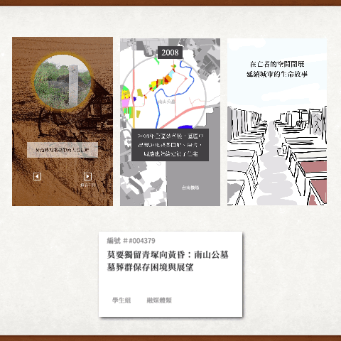
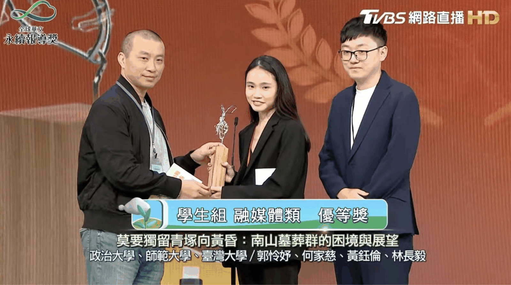

This article is written in Chinese.
2023.10.27 · 生活紀實 · 數位敘事 · 科技應用
【TVBS 全球華文永續報導獎】融媒體組得獎紀錄
用多元的網頁敘事方式，讓故事變得更好傳遞給大眾，一直是過去的自己很想要嘗試的一個挑戰。
1 / 關於報導
用多元的網頁敘事方式，讓故事變得更好傳遞給大眾，一直是過去的自己很想要嘗試的一個挑戰。

大一升大二的暑假，因緣際會被教授要求優化實驗室老舊的結構比對軟體的網頁介面，當時的自己更是理解到，除了科學本身，要開發一個好用、易用的系統，是一件多麽重要的事情。因此，跟學長協作將整個網頁介面重寫，完成更響應式的介面、跟舒服的使用體驗。
來到新聞所後，一直很想要完成一個理想中透過網頁的彈性讓議題更簡化的被大眾接收。後來吉隆老師的引介，知悉需要一個會寫網頁的人協助，因此與怜妤一起完成了南山公墓這題。
因為不是從頭開始，且在不到一個月的時間要完成報導文字調整與建置網頁，確實相當緊迫。（當時同時還有兩份期末報告進行）最終花了二至三週的時間整理報導與素材，一週將網頁建置完成，投稿TVBS全球華文永續報導獎，前幾天名單公佈，有幸入圍融媒體獎。
對我來說，無論是入圍或得獎倒是無妨，但自己總算是又圓了一個夢。雖然說這次的作品文字敘事量仍大、自己也沒有太多炫砲的技術，然而還是嘗試一些自己能力範圍可及的嘗試，包括點按的幻燈片效果、利用報導者開源工具做疊圖...。
而這次給自己的挑戰是「速度」跟「使用者體驗」。過去常常因為期末很趕、課程緊湊的關係，總做出一些跛腳的網站，要嘛有些功能手機版無法呈現、要嘛網頁太重loading緩慢。
在一切的敘事脈絡確定後，這次希望從源頭就以「mobile first」開發，並在各個細節都盡量注意「響應式設計」和「滑動流暢度」。必須說，學生作品其實很難兼顧電腦、手機等各載具，畢竟我們就不是真正的工程師（不然就不會在這邊了ＸＤ）。
最後，受限於時間，需要快速完成整份作品，多嘗試與 ChatGPT 共同進行程式協作，缺素材就嘗試更多 AI 介入的可能（這次使用 Recraft AI 補了幾張素材圖）。
儘管現在的自己，內心早已對類似這些數位敘事手法是否有助於新聞敘事打上一個問號，但至少完成了一件一直以來想做的事情，已足夠快樂。
2 / 關於得獎
去永續報導獎的路上很有趣，週日下午文湖線依舊擁擠，前方站著年輕之一男一女，都看著手機，一人在滑小紅書，一人在滑抖音。（對不起亂偷看別人在看啥XD）
在這個注意力不集中的時代，這邊在辦新聞媒體的獎項，有的寫了千字珍貴好看的報導，有的短至五、六分鐘，長至二三十分的深度專題。媒體先進們很努力，但又有多少人會看到這些？
「看到這麼多好作品，我們媒體是還有希望的。」
評審們一口氣看了一年來最好的作品們，但這在現實生活中根本不可能發生。
到底是好媒體找不到讀者，還是讀者找不到好媒體？歸咎於演算法？像是雞生蛋蛋生雞的辯論，大概永遠不會有解答。
不過又讓我想到，前陣子 Joeman 發佈一則影片，提到自己的長影片企劃被中國「重製」成一部精簡版的「AI說書」影片，在中國影音平台又掀起一波；此外也曾提到，YT 流量變化莫測，影響創作者甚鉅。資訊變得愈發廉價，「似乎」可預期的是，這些文字、新聞類影音，基本上隨著時代會更加萎縮。
3 / 關於數位敘事
昨日是廣播金鐘、YT走鐘獎，今日TVBS全球華文永續報導獎。
很有趣的類比。不會說孰舊孰新，只要跟不上時代、跟不上演算法，大概就會是舊。
感謝永續報導獎，平面組個資外洩報導跟融媒體南山公墓網頁專題，最終後者獲得優等肯定。雖然就視覺上，我對自己能完整為載具（手機版、電腦版）閱讀新聞雖滿意，但當然也有很多值得思考之處。

只有不到一個月的時間，覺得已經心滿意足。
認真的回想，很想把一個新聞做成好看的網頁敘事是在2015年高二的我，看到報導者急診人生的作品，當時驚呼原來新聞可以這樣玩。瞬間八年過去，自己真正做出一篇，既開心又難過。開心的是自己似乎終於達標，難過的是，技術層面而言，似乎可能還在用數年前的網頁技術，如同評審內所述「....作品仍被十幾年前的網頁設計所綁住」。
是啊，手法、技術，成長幅度有限，或許加了3D、地理圖資可能更加酷炫，但能抓住讀者注意力嗎？
過去做數位敘事，是為了引發讀者興趣，讓讀者更好的閱讀完整報導。(註1) 但今天注意力更加破碎的世代，似乎做再強大的數位敘事，又有多少人能滑完？
另外，個資外洩的報導雖入圍但未獲獎，仍感謝老師、組員們一路走來的努力與幫助。這是我第一篇自己發想、認真刊登的新聞報導，也有極高機率很可能會是最後一篇報導。（數月以前面試了一輪媒體業，表面是找工作，實則也努力認識這個產業。當然也因此為這條路多打上幾個問號。）
未來依舊未知。
註1：不過回到數位敘事，雖然我抱持著也是有些悲觀的態度，但在臉書發表完這樣的言論後， READr 的主管(?) 也分享他的觀點：「我自己現在比較願意理解的是，用不同敘事語言來講述不同的部分，幫助讀者更容易理解。因為我自己想法『讓讀者更好的閱讀完整報導』其實還是用文字報導的思考模式。」